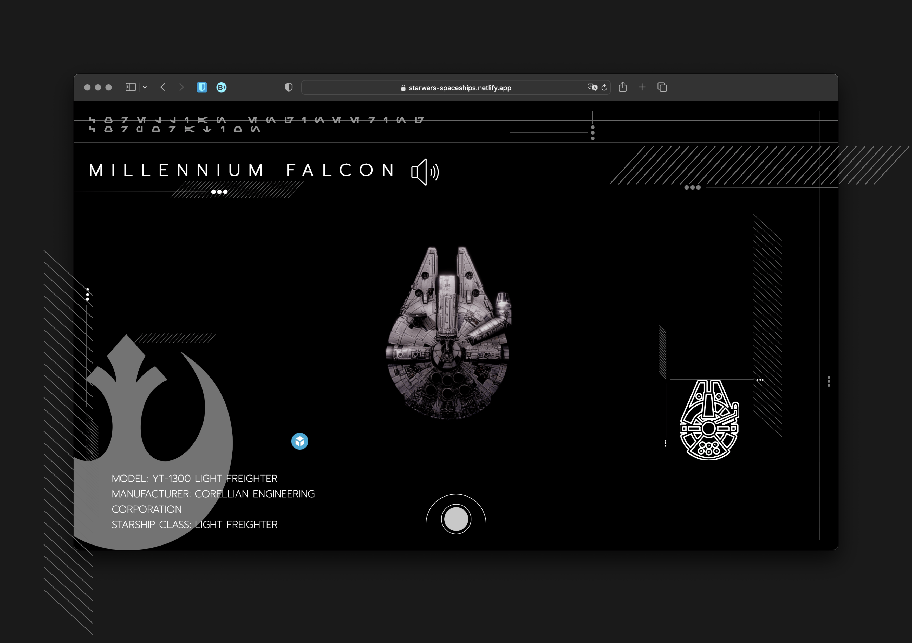

Star Wars 3D Models and Blueprints Project Walkthrough
Source Code

About
Originally homework from CS50, where we were tasked to build a simple homepage using HTML, CSS, and JavaScript. I took this as an opportunity to go beyond this by practicing design and using advanced CSS methods. The first version of the website built was Flask is archived is this repo: Star-Wars-Front-End-Web-App-using-Flask. I later refactored it from Flask to Gatsby.js and Styled Components.
Features
3D Model and and blueprints for the following starships
Millennium Falcon
Imperial Star Destroyer
Tie Fighter
Technologies
Front-End
Gatbsy
React
Javascript ES6+
Styled Components
GraphQL
Production
Netlify
Design and Architecture
Initially built this website with a backend server using the Python framework, Flask, which was primarily used for its templating capabilities offered by Jinja 2.0. The website was hosted on the free tier plan on Heroku, alongside two other websites using the free tier plan. The main problem with this approach was that it was both heavy and expensive. It was heavy in that Flask wasn't strictly neccessary to achieve templating. It was expensive in that the free tier plan on Heroku put the app to sleep after 30 minutes. Furthermore, the free dyno minutes would often expire by the 24th of each month, which effectively took down the website until the start of the next month. Therefore, after learning about React and the Jamstack, I put the two together and refactored this application by migrating from a server-based architecture with Flask to a static website architecture with Gatsby.js, and by switching cloud-hosting providers from Heroku to Netlify. The code is more simple, DRY, and modular with React. The website has better performance when loading pages with Gatsby and even supports offline capability with Progressive Web App service workers.
Refactored plain CSS with Styled Components as a CSS alternative for better code organization, to practice working with CSS-in-JS, and to practice working with a new technology by only reading documentaton. Furthermore, Styled Components are the combination of the element and the rules that style it, so it's also less verbose than something like CSSModules.
Created prototype in AdobeXD to prevent wasted engineering time, to practice UX/UI design, and to practice building from a UX/UI design specification.
Protoyped website with a Mobile-first design as practice for implementing the industry-standard principle.
Heavily relied on open-source assests to make use of the high quality material created or curated by the open-source community.